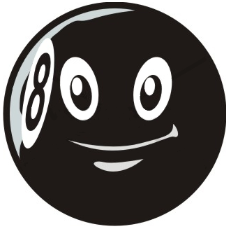
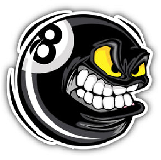
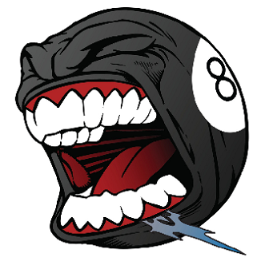
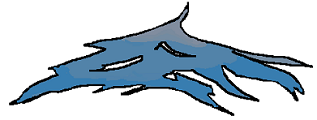

Welcome to Odd Assist
A360's Magic 8-Ball Answer To Everything!
Simply think of a question that has a yes or no answer, then press the "Shake 8-Ball button!".
Clicking the "Shake 8-ball" button will remove the button and reveal a random answer after a few seconds. After the answer has been revealed, focus will be returned to this button.



